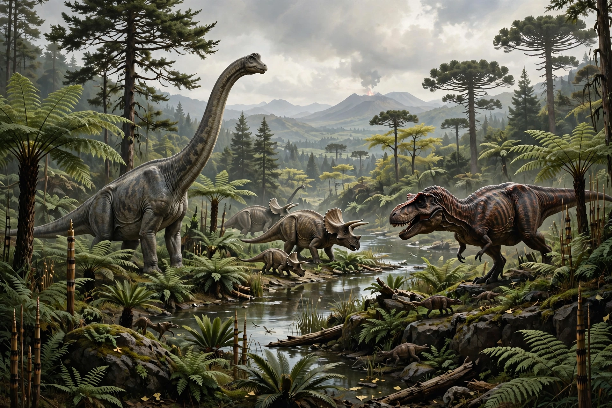

The Mesozoic Era is the second-to-last era of Earth's geological history, lasting from about 252 to 66 million years ago, comprising the Triassic, Jurassic, and Cretaceous periods. It is known as the Age of Reptiles.

| Mesozoic Era | |
|---|---|
| Time | 251.9–66 Ma |
| Periods | Triassic, Jurassic, Cretaceous |
| Preceded by | Paleozoic |
| Followed by | Cenozoic |
The supercontinent Pangaea broke apart into Laurasia and Gondwana, then into modern continents. Climate was generally warm with no polar ice caps.
Dinosaurs, pterosaurs and marine reptiles dominated. Mammals and birds evolved from theropods and small mammal ancestors; flowering plants appeared in the Cretaceous. The era ended with the Cretaceous–Paleogene extinction event, likely caused by an asteroid impact at Chicxulub.
Dinosaur · Triassic · Jurassic · Cretaceous